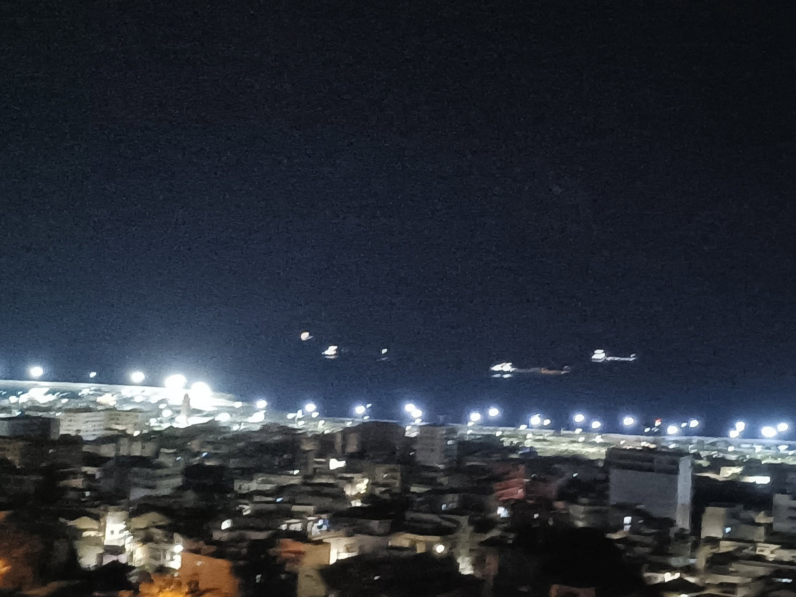

La mer au bout des rues
La ville respire le sel.
Entre deux collines,
la lumière s’accroche
aux façades écaillées,
aux balcons rouillés,
aux cris des marchands.
Les bus s’appellent d’un klaxon,
les mouettes rient au-dessus du port,
et le vent soulève des mots
qu’on ne comprend pas tous,
mais qui sentent la vie.
Sur les hauteurs,
la Casbah veille,
pleine d’ombres,
d’enfants,
de jasmin.
Et au bout de chaque ruelle,
la mer —
toujours la mer.
Djamel Metref
At Yenni le 18 octobre 2025

← Tous les poèmes